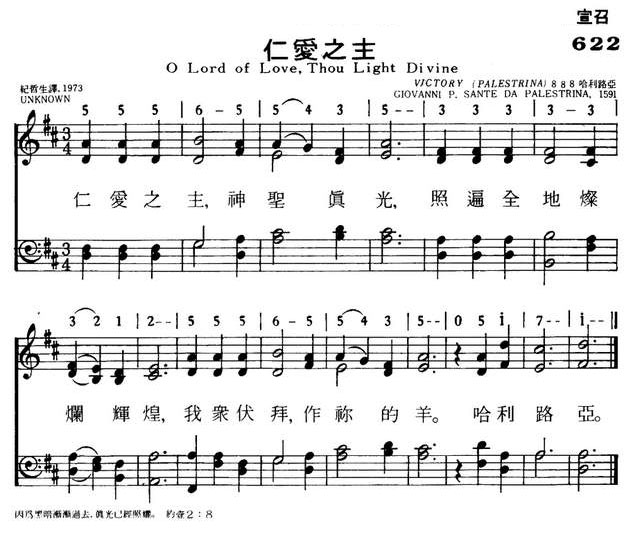
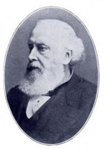
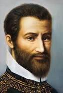
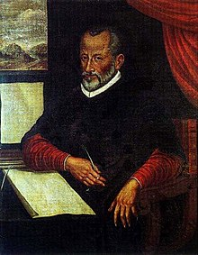

|
|
622仁爱之主 |
|
O Lord of love, Thou light divine, |
神圣真光, 照遍全地灿烂辉煌, 我众伏拜, 作你的羊. 哈利路亚. |
|
https://www.mred365.cn/szxg/7625.html  |
|
|
|
|

| Text: | O Lord of love, Thou light divine |
| Tune: | VICTORY |
| Adapter: | William Henry Monk |
| Composer: | Giovanni Pierluigi da Palestrina |

Monk, William Henry, 1823-1889| Short Name: | William Henry Monk |
| Full Name: | Monk, William Henry, 1823-1889 |
| Birth Year: | 1823 |
| Death Year: | 1889 |
William H. Monk (b. Brompton, London, England, 1823; d. London, 1889) is best known for his music editing of Hymns Ancient and Modern (1861, 1868; 1875, and 1889 editions). He also adapted music from plainsong and added accompaniments for Introits for Use Throughout the Year, a book issued with that famous hymnal. Beginning in his teenage years, Monk held a number of musical positions. He became choirmaster at King's College in London in 1847 and was organist and choirmaster at St. Matthias, Stoke Newington, from 1852 to 1889, where he was influenced by the Oxford Movement. At St. Matthias, Monk also began daily choral services with the choir leading the congregation in music chosen according to the church year, including psalms chanted to plainsong. He composed over fifty hymn tunes and edited The Scottish Hymnal (1872 edition) and Wordsworth's Hymns for the Holy Year (1862) as well as the periodical Parish Choir (1840-1851).
Tune Information
| Title: | VICTORY (Palestrina) |
| Composer: | Giovanni Pierluigi da Palestrina (1591) |
| Meter: | 8.8.8.4 with alleluias |
| Incipit: | 55565 54353 33333 |
| Key: | A♭ Major |
| Copyright: | Public Domain |
| Short Name: | Giovanni Pierluigi da Palestrina |
| Full Name: | Palestrina, Giovanni Pierluigi da, 1525?-1594 |
| Birth Year (est.): | 1525 |
| Death Year: | 1594 |
Giovanni Pierluigi (da Palestrina) Italy 1525-1594.

Born at Palestrina, Italy, near Rome, then part of the Papal States to Neopolitan parents. As a youth he became a chorister at the Santa Maria Maggiore basilica in the Rome Diocese. This allowed him to learn literature and music. In 1540 he moved to Rome, where he studied in the school ofr the Hugenot, Claude Goudimel. He also studied with Robin Mallapert and Firmin Lebel. Orlando Di Lasso was also a musical advisor to him. From 1544-1551 he was organist at the Cathedral of St Agapito, the principle church of his native city. In 1547 he married Lucrezia Gori, and they had four children: Rodolfo, Angelo, Iginio, and a daughter. In 1551 Pope Julius III (previously Bishop of Palestrina) appointed him ‘maestro di cappella’, or musical director of the Cappella Giulia (choir). Pierluigi dedicated his first published compositions to Pope Julius III (1554), known as ‘the book of Masses’. It was the first book of masses by a native composer, since most sacred works in those days were from low countries (France or Spain). In 1555 Pope Paul IV ordered that all papal choristers should be clerical. As Pierluigi married early in life and had four children, he was unable to continue in the chapel as a layman. During the next decade he held positions similar to his Julian Chapel appointment at other chapels and churches in Rome, including St John Lateran (1555-1560), and Santa Maria Maggiore (1561-1566). In 1571 he returned to the Julian Chapel and remained at St Peter’s for the rest of his life. The 1570s was a decade of difficulty for him, as he lost his brother, two sons, and his wife in three separate outbreaks of plague (1572-1575-1580). In 1578 he was given the title of ‘Master of Music’ at the Vatican Basilica. He thought of becoming a priest at this time, but instead married a wealthy widow, Virginia Formoli, in 1581, widow of a wealthy merchant, which gave him financial independence (he was not well-paid as choirmaster). He spent considerable time administering to her fortune, but also was able to compose prolifically until his death. He also helped to found an association of professional musicians called the Vertuosa Compagnia dei Musici. He died in Rome of pleurisy. He left hundreds of compositions, including 1045 masses, 68 offertories, 140 madrigals, 300+ motets, 72 hymns, 35 magnificats, 11 litanies and several sets of lamentations. There are two comprehensive editions of his works: a 33-volume edition published by Breitkopf and Hartel, in Leigzig, Germany, between 1862-1894, edited by Franz Xaver Habert, and a 34-volume edition published in the mid 20th century by Fratelli Scalera, in Rome, Italy, edited by R Casimiri and others. As a Renaissance musician and composer of sacred music he was the best known 16th century representative of the Roman School of musical composition. He had a long-lasting influence on the development of church and secular music in Europe, especially on the development of counterpoint, his work considered the culmination of Renaissance polyphony. Very famous in his day, he was considered by some the legendary ‘savior of church music’. A 2009 film was produced by German television about him, titled: ‘Palestrina – Prince of Music’.
John Perry
喬瓦尼·皮耶路易吉·達·帕萊斯特里納（義大利語：Giovanni Palestrina；1525－）[編輯]
| 帕萊斯特里納 | |
|---|---|
|
 |
|
| 原文名 | Giovanni Pierluigi da Palestrina |
| 出生 | 約1525年 教宗國帕萊斯特里納 （現 |
| 逝世 | 1594年2月2日（68－69歲） 教宗國羅馬 （現 |
| 國籍 | 教宗國 |
| 知名作品 | 104首彌撒曲（包括《教宗瑪策祿彌撒》），300餘首經文歌，大量牧歌 |
| 所屬時期/樂派 | 文藝復興羅馬樂派 |
| 擅長類型 | 彌撒曲、經文歌、聖歌、牧歌及其他聲樂作品 |
喬瓦尼·皮耶路易吉·達·帕萊斯特里納（義大利語：Giovanni Pierluigi da Palestrina；約1525年－1594年2月2日）[1]，為義大利文藝復興後期的作曲家，也是十六世紀羅馬樂派的代表音樂家[2][3]。由於帕萊斯特里納在教會音樂中有很深的造詣，因此稱為「教會音樂之父」，文藝復興時期最傑出的作曲家之一，其作品是文藝復興時期複音音樂的經典[2]。
生平[編輯]

{kind=link}
帕萊斯特里納於生於羅馬附近的的小鎮帕萊斯特里納，當時歸屬教宗國。當時人們常以傑出人士的生地稱呼該人，所以人們也以帕萊斯特里納稱呼他。對於他的準確出生日和早年生活，人們所知不多[4][5]。他的創作生涯基本上在羅馬度過。他在多個教堂任職，其創作曾引起教宗重視。但是後世有很多關於他的傳奇故事的真實程度則是有待考證的。
帕萊斯特里納出道時，義大利深受北歐風格的復調音樂影響，其中最出名的作曲家是紀堯姆·迪費和若斯坎·德普雷。帕萊斯特里納之前，義大利還沒有與他們成就相當的復調作曲家。[2]
帕萊斯特里納於1537年來到羅馬，在聖母大殿唱詩班內當歌手。後因變聲，於1544年回到故鄉任聖亞加比多大教堂任管風琴師兼聲樂教師。他結識了時任當地總主教的德爾蒙特，並來往甚密。1550年德爾蒙特被選為教宗，為教宗儒略三世。1551年，帕萊斯特里納被任命為羅馬聖伯多祿大殿下屬的朱利亞合唱團的樂長。1554年，他的的第1部彌撒曲集出版並進獻給儒略三世。這是當時第一部由義大利人創作的彌撒曲集，此前的彌撒曲集多出自低地國家如法國，葡萄牙等國[6]。同年由教宗推薦，未經考試就得到當時教會音樂家的最高榮譽——教宗合唱團歌手。[7][8]
帕萊斯特里納於1594年因胸膜炎死於羅馬。按照當時習俗，他的遺體在其逝世當天就被下葬。他的棺木上銘刻了「Libera me Domine」（上主，請拯救我）[9]。有三個合唱團一起在其葬禮上演唱了聖歌。[10]
音樂[編輯]
帕萊斯特里納曾創作了大量作品，主要是聲樂作品，彌撒曲、經文歌等尤為著名，其中也有許多無伴奏合唱的作品。被確認為他所創作的彌撒曲有105首，另有10首尚有疑問。此外，他還寫有375首經文歌、68首奉獻經、約80首讚美詩、35首聖母頌歌、約50首的義大利語宗教性牧歌以及耶利米哀歌和連禱等。[7] 他最著名的作品《教宗瑪策祿彌撒》，曾被後人認為是為了勸說教會放棄對復調音樂的限制而作的。帕萊斯特里納的創作對天主教教堂音樂的發展有很重要的作用，也是文藝復興時期復調音樂的代表人物之一[11]。
由帕萊斯特里納的彌撒曲可以看出他不同時間作品風格的演變[2]。巴哈特別喜歡他的Missa sine nomine，在編寫B小調彌撒曲時研究了這首彌撒曲[12]。大部份帕萊斯特里納的彌撒曲都是在1554年到1601年出版的十三本作品集中，最後的七本是在帕萊斯特里納死後才出版[2][13]。
帕萊斯特里納的作品《教宗瑪策祿彌撒》曾被錯誤的認為和特倫托會議有關，此說法也是普菲茨納創作歌劇《帕萊斯特里納》的基礎。依此說法，編寫《教宗瑪策祿彌撒》是為了遊說特倫托會議放棄聖樂中復調音樂的限制[14]。不過近期的研究發現該彌撒曲的作曲時間是在討論復調音樂的禁令之前（至少十年之前）[14]。歷史資料也指出特倫托會議沒有禁止任何教會音樂，也沒有針對教會音樂訂定任何規定或正式文件。這些故事起源自特倫托會議參與者的個人看法，不代表特倫托會議的官方意見。不過過了幾世紀，這些傳聞被誤認為是事實，編寫成書。帕萊斯特里納創作此彌撒曲的原因不明，不過因為找不到類似的禁令，其創作也看不出和反宗教改革有關[14]。帕萊斯特里納的風格從1560年代一直到他逝世都保持一致。
帕萊斯特里納音樂的特點是不和諧的部份多半會限制在一小節中的弱拍[15]。因此產生了更流暢的復調音樂，現在認為這是文藝復興後期音樂的風格，因此將帕萊斯特里納（和奧蘭多·德·拉絮斯）譽為在若斯坎·德普雷之後，歐洲頂級的作曲家。「帕萊斯特里納風格」視為是文藝復興時期對位法的基礎，大部份是歸功於18世紀作曲家及音樂理論家約翰·約瑟夫·富克斯，在他的《藝術津梁》中將帕萊斯特里納的技巧編寫為學生作曲的工具。
很多有關帕萊斯特里納的研究是在十九世紀由Giuseppe Baini所提出，他1828年提出一篇專題論文，使得帕萊斯特里納再度出名，而且更加強了在特倫托會議改革過程中拯救教會音樂的說法[13]。十九世紀傾向的英雄崇拜出現在此論文中，在普菲茨納創作歌劇《帕萊斯特里納》時達到高峰，而且此論點還一直延續到今日[13][14]。
後世影響[編輯]
德國後浪漫主義作曲家普菲茨納曾根據帕萊斯特里納的事跡創作其最著名的歌劇《帕萊斯特里納》[16]。
音樂評論家唐納德·托維評論貝多芬的莊嚴彌撒與傳統復調樂曲之間的聯繫：
| “ | 就是巴赫和亨德爾也很少有這樣的空間和音效的感覺。貝多芬的前人，幾無能如此貼近帕萊斯特里納，發現其部分失傳秘密者。 | ” |
影片[編輯]
2009年德國的ZDF/Arte曾製作一部有關帕萊斯特里納的影片《Palestrina - Prince of Music》，導演是Georg Brintrup[17]。
參見[編輯]